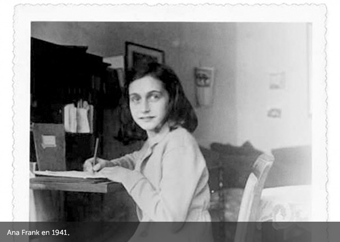
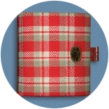
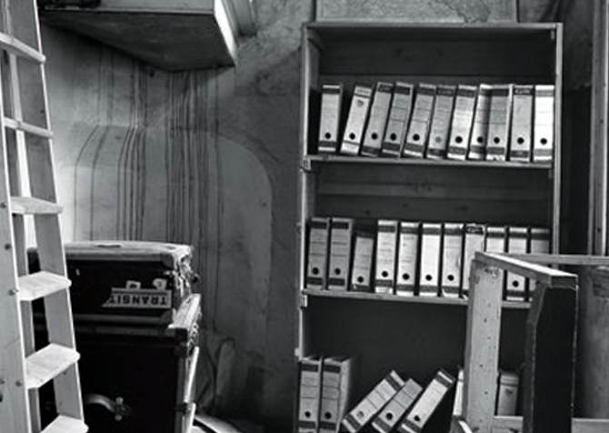

Ana Frank nació en Frankfurt, Alemania, el 12 de junio de 1929. Su familia estaba compuesta por su madre Edith, su padre Otto, su hermana mayor, Margot, y ella. Otto Frank fue un empresario y aficionado a la fotografía que en 1933, tras el ascenso del nazismo al poder, trasladó a su familia a Amsterdam, Holanda.
Allí Margot y Ana crecieron y se educaron en la escuela pública.
Tenían muchas amigas con las que compartían juegos y paseos.
El 10 de mayo de 1940 Alemania invadió Holanda.
Los derechos de los judíos fueron paulatinamente limitados.
La comunidad judía sufrió un aislamiento total.


El diario.
El 12 de junio de 1942, Ana cumplía trece años y recibía de regalo un diario al que llamó
Kitty y al cual confiaría todos sus secretos.
“Sábado, 20 de junio de 1942.
(...)
Después de 1940, nuestra buena época iba a terminar rápidamente: ante todo la guerra, la capitulación, y la invasión de los alemanes llevándonos a la miseria. Disposición tras disposición contra los judíos. Los judíos obligados a llevar la estrella, a ceder sus bicicletas (...)
Así seguíamos tirando, sin hacer esto, sin hacer aquello, Jopie me dice siempre: 'No me atrevo a hacer nada, de miedo a que esté prohibido.' Nuestra libertad, pues, está muy restringida: con todo, la vida es aún soportable.”
Desde julio de 1942 comenzaron a partir trenes hacia el Este cargados de judíos.
Margot recibió la orden de presentarse el 5 de julio de 1942 y al día siguiente la familia Frank se mudó al escondite que había preparado, donde permanecieron escondidos junto a otros cuatro judíos durante veinticinco meses.

La entrada al anexo estaba cubierta por la biblioteca.
El ático desde donde se podía observar el cielo.
“Miércoles, 03 de mayo de 1944.
(...)
el desayuno sólo consta de una taza de avena (...) para el almuerzo tuvimos ensalada cocida podrida. Ensalada cruda o cocida, espinacas..., ese es nuestro menú, no hay otra cosa, salvo las papas podridas: ¡un artificio delicioso!”
“Sábado, 27 de mayo de 1944.
(...)
Más de una vez me pregunto si, para todos nosotros, no habría valido más no ocultarnos y estar muertos a la hora presente, antes de pasar por todas estas calamidades, sobre todo por nuestros protectores, que, al menos, no estarían en peligro...”
“Que llegue el fin, aunque sea duro; al menos no sabremos si, a fin de cuentas, debemos vencer o perecer.
Otto Frank fue el único sobreviviente de los habitantes del escondite.
Miep Gies, que había sido una de las protectoras de los escondidos, recogió los escritos de Ana cuando ellos fueron deportados.
En 1947 Otto Frank decidió publicar el Diario de Ana que hoy está editado en muchos idiomas.
La casa que sirvió de escondite se transformó en museo en 1957, administrado por la Fundación Ana Frank que intenta combatir por medio de publicaciones y actividades educativas el antisemitismo, el racismo, la xenofobia y la intolerancia.
Otto Frank murió en Basilea el 19 de agosto de 1980.